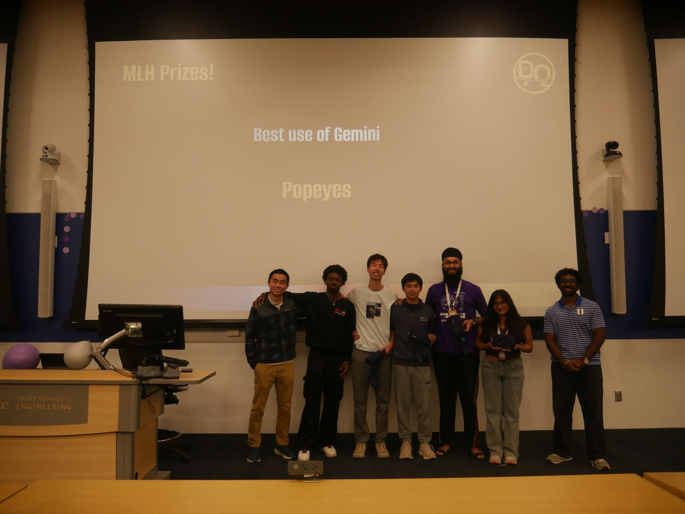
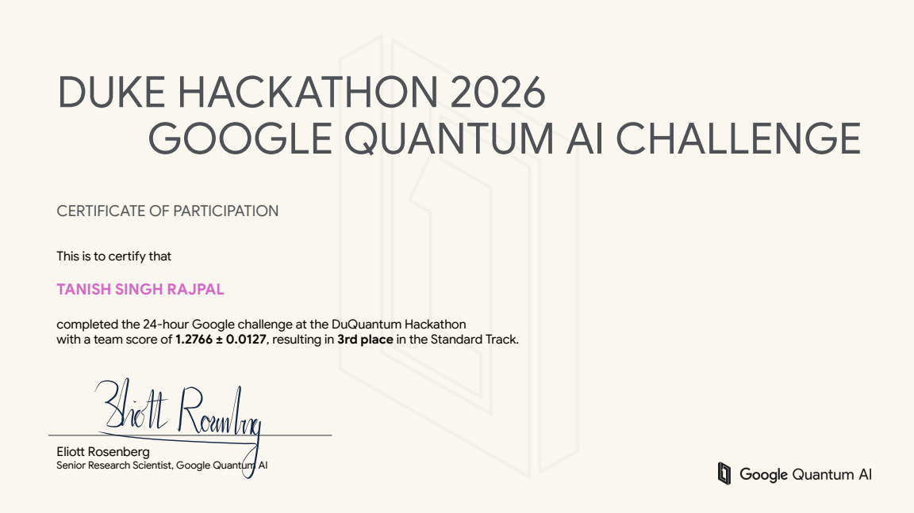
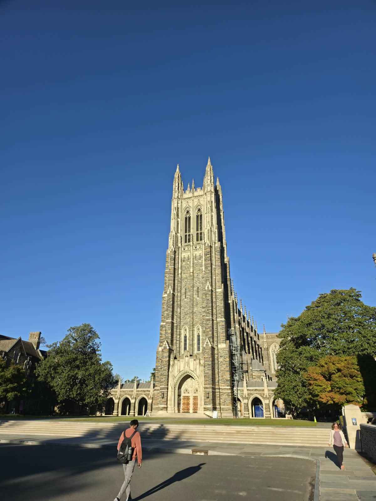

Exact states, noisy hardware: two awards at DuQuantum
Third place in the Google Quantum AI Challenge, MLH Best Use of Gemini, and a 5:30 a.m. lesson in trusting hardware measurements.

Two awards, one very long night, and a reminder that a simulator can only tell you what its model knows.
At DuQuantum at Duke University on October 24–25, Team Popeyes placed third in the Google Quantum AI Challenge, Standard Track, with a team score of 1.2766 ± 0.0127. We also won MLH Best Use of Gemini for Ask the Circuit.
The challenge: exact states on noisy hardware
We had 24 hours to write a function that takes a requested Dicke state and the day's calibration data for Google's 105-qubit Willow processor, chooses physical qubits, and returns a circuit. A Dicke state shares a fixed number of excitations equally across all valid arrangements. The noiseless circuit had to prepare the target exactly, including its relative phases: an incorrect state scored zero.
Exactness was only the starting point. Extra gates introduce more opportunities for noise, and Willow's grid constrains which qubits can interact directly. We needed short, exact circuits that fit the available connections and the calibration data, using the challenge's CZ and PhasedXZ gates.
My part of the 24 hours
- I rebuilt the textbook construction to run directly on the grid, reducing reliance on compiler routing, and wrote the code that selects physical qubits from the day's error rates.
- I tested and merged four teammates' branches into one notebook, then presented the technical design and qubit selection to the judges.
- I built our project website, an interactive explanation of Dicke states, Willow's connectivity, and our design choices.
The 5:30 a.m. lesson
The moment I remember most came around 5:30 a.m. The organizers' hardware rescoring contradicted our simulation: the circuit with fewer gates was not always the circuit with the higher score. We went back to the results, investigated the mismatch, and changed our final design.
Measure first, then trust the model.
Gate count mattered, but it did not capture every effect that mattered on the device. That experience made the limits of our noise model much more concrete. The benchmark tables in our repository describe local simulations; they should be read separately from the organizers' hardware evaluation and the team score on the certificate. The current project website also distinguishes later local revisions from the earlier notebook used in preliminary hardware testing.
The awards
The Google Quantum AI certificate records third place in the Standard Track and the team score. The awards-stage photo above captures the MLH Best Use of Gemini announcement for Popeyes.

A good day to be Team Popeyes
Huge thanks to Richard Shan, Bryan Zhong, and Aanha Islam for an intense and fun day. Thank you to Duke Quantum Center, Major League Hacking, Eliott Rosenberg, Chloe Holzinger, and Google Quantum AI for a challenge that kept us thinking until the deadline.
I am also grateful to Carnegie Mellon University's Information Networking Institute and Duke University for supporting me and helping me get there.

Explore the project website ↗ · Read the code and technical write-up ↗